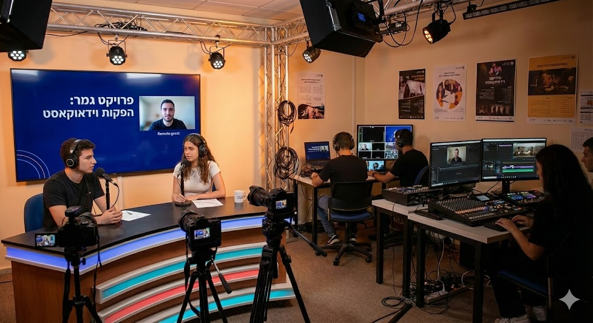

👥 הרכב הקבוצה
הזינו את השמות פעם אחת – הם יסונכרנו לכל התיק.
📌 נושא הקבוצה
🌿 שלב 1: גיבוש ונושא
מטרה: לגבש קבוצה סביב נושא משותף בעל ערך חברתי ותקשורתי.
הצהרת כוונות
🔍 שלב 2: תחקיר מעמיק
מטרה: לחקור את נושא-העל שבחרתם ממגוון זוויות – חברתיות, היסטוריות ותקשורתיות – על מנת להעמיק את ההבנה, לחדד את כיווני החקירה ולהתכונן לשלבי התסריט וההפקה.
📰 1. סיקור תקשורתי במדיה המסורתית
טלוויזיה, עיתונות, רדיו, אתרי חדשות – ציינו שני מקורות בנושא
| # | כותרת הכתבה / המקור | קישור | סיכום עיקרי הדברים | הערות והתחברות אישית לנושא |
|---|---|---|---|---|
| 1 | ||||
| 2 |
🌍 2. הקשרים רחבים (חברתי, היסטורי, תרבותי, כלכלי)
🎙️ שלב 3: הפקת וידאוקאסט אישי
מטרה: לפתח תוצר אישי בתוך מסגרת קבוצתית. כל תלמיד יבחר תת-נושא אישי, יבצע עליו תחקיר עצמאי, יאתר מרואיין מתאים ויפיק פרק אישי ראשון.
בחרו את התיק האישי:
🎬 שלב 4: הכנות לראיון באולפן
מטרה: להיערך מקצועית וטכנית ליום הצילום כדי למנוע תקלות.
- לבדוק את ציוד הצילום: מצלמות, חצובות, כרטיסי זיכרון, סוללות.
- להכין את האולפן: תאורה, כרומקי, סידור מקום ישיבה.
- לתאם עם המרואיין שעת הגעה ונושאים.
- לחלק תפקידים בצוות.
בחרו את דף ההפקה האישי:
🎞️ שלב 5: עריכת הפרק האישי
המטרה הסופית: לקיחת הראיון המלא שצולם באולפן ויצירת תקציר ראיון של החלקים החשובים. אורך כ-5 דקות.
בחרו את יומן העריכה האישי:
📢 שלב 6: הפצת התוצר
העלאת התוצרים: בחרו פלטפורמה (YouTube/Spotify). הקפידו על שם ברור, תיאור קצר, תגיות ותמונה מייצגת (Thumbnail).
טבלת קישורים:
| שם התלמיד | קישור לפרוייקטון |
|---|
📖 פרויקט הגמר – וידאוקאסט עיתונאי
פרויקט הגמר מהווה את השלב המסכם. מטרתו להרחיב את הפרויקטון מי"א לכתבה עיתונאית מלאה (10–15 דקות) המשלבת ראיון אולפן וכתבת שטח.
מטרות: שילוב אישי וקבוצתי, פיתוח מיומנויות עיתונאיות, חשיבה ביקורתית והפצה מקצועית.
מטרות: שילוב אישי וקבוצתי, פיתוח מיומנויות עיתונאיות, חשיבה ביקורתית והפצה מקצועית.
שלבי העבודה (י"ב):
| שלב א: תכנון ותחקיר שטח | תכנון הכתבה המורחבת, Shot List |
| שלב ב: הכנה לצילום | ציוד, גיבויים, שאלות |
| שלב ג: צילום חוץ | ראיונות שטח, B-roll, סאונד |
| שלב ד: עריכת כתבת חוץ | כתבה עצמאית של 5 דקות |
| שלב ה: אינטגרציה (Master) | שילוב אולפן ושטח, קריינות, סגיר |
| שלב ו: הפצה | הגשה סופית |
שלב א: תכנון ותחקיר מקדים
מטרה: להבין את הסיפור, מי מספר אותו ואיך.
ביצוע: לנסח שאלת חקר, תחקיר על מקום ודמויות, הכנת Shot List ותיאום מול מצולמים.
ביצוע: לנסח שאלת חקר, תחקיר על מקום ודמויות, הכנת Shot List ותיאום מול מצולמים.
תיקי תחקיר אישיים:
שלב ב: הכנה לצילומי חוץ
מטרה: להגיע ליום הצילום מאורגן ומוכן טכנית.
ביצוע: בדיקת ציוד (מצלמות, סאונד, תאורה), הכנת גיבויים (סוללות, כרטיסים), הכנת שאלות ודפי תחקיר.
ביצוע: בדיקת ציוד (מצלמות, סאונד, תאורה), הכנת גיבויים (סוללות, כרטיסים), הכנת שאלות ודפי תחקיר.
תיקי הכנה אישיים:
שלב ג: צילום חוץ
מטרה: לאסוף חומרים איכותיים. לצלם ראיונות נקיים, B-roll ו-Nat Sound.
ארגון: שמירת קבצים בתיקיות מסודרות (Camera, Audio, B-roll).
ארגון: שמירת קבצים בתיקיות מסודרות (Camera, Audio, B-roll).
יומני צילום אישיים:
שלב ד: עריכת כתבת החוץ (5 דקות)
מטרה: לבנות כתבה עצמאית קצרה עם התחלה-אמצע-סוף.
ביצוע: סנכרון וידאו וסאונד, בחירת קטעים חזקים, עריכה ל-5 דקות, הוספת Lower Thirds ומוזיקה.
ביצוע: סנכרון וידאו וסאונד, בחירת קטעים חזקים, עריכה ל-5 דקות, הוספת Lower Thirds ומוזיקה.
יומני עריכת שטח:
שלב ה: עריכת התוצר הסופי (Master Sequence)
מטרה: לשלב את הראיון המקוצר (י"א) עם כתבת השטח (י"ב) לכתבה אחת זורמת.
הוראות: לפתוח Master Sequence, להיעזר בתמלול, לשלב קטעי אולפן ושטח, להוסיף קריינות במעברים.
הוראות: לפתוח Master Sequence, להיעזר בתמלול, לשלב קטעי אולפן ושטח, להוסיף קריינות במעברים.
תיקי אינטגרציה אישיים:
📢 שלב ו: הפצת התוצר
הגעתם לסוף הדרך! זהו רגע של גאווה. כל תלמיד יוסיף כאן את הקישור לכתבה המוגמרת (YouTube/Spotify/אתר המגמה).
טבלת קישורים סופית:
| שם התלמיד | קישור לפרויקט הגמר |
|---|
🤖 שלב ז: שימוש בבינה מלאכותית
השימוש ב-AI הוא כעזר בלבד (חידוד רעיונות, השראה, ניסוח). האחריות על התוכן היא שלכם. עליכם לתעד את השימוש בכלי.